Helping elderly users read independently through a lamp that can do text recognition and audio playback.

A lamp that speaks words out loud — giving elderly users back the independence to read medication labels, books, and newspapers.
Through text recognition and audio playback, elderly users can independently read medication labels, books, and newspapers.
This product removes the reliance elderly users have on others during their medication routine. The real shift is moving from needing to ask for help, back to being able to handle it alone.
My Mom's Story: She Can't Read Her Medication Labels
Every morning, she faced a row of medicine bottles and a pill organizer filled with tablets of different colors. The labels were printed in small font, requiring her to lean in and squint just to make out a few words.
She was never quite sure if she had picked the right pill or what the correct dosage was for that day. That uncertainty carried real health risks, and quietly turned something she should have been able to manage on her own into something she needed help with.
What she needed wasn't a new device to learn. She just needed to be able to read the label in front of her — the same way she always had, with a lamp on the table beside her.
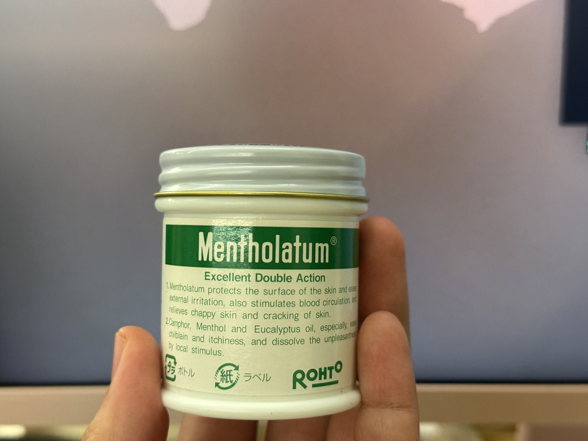
The problem — small-print medication labels that are difficult to read without help
Starting from what already belongs on the table
Reading already requires light, and a lamp belongs on the table. I want the technology to live inside something familiar, so it wouldn't ask users to change their behavior at all.
However, before committing to a direction, I wanted to test whether this held up. I drew a simple paper concept and held a light interview, asking 10 people about their own experiences with vision-related difficulties and whether this kind of device would actually address their problem.
Q1. What vision-related difficulties have you or your elderly family members encountered, and how were they handled?
Q2. Do you feel this product addresses your problem?
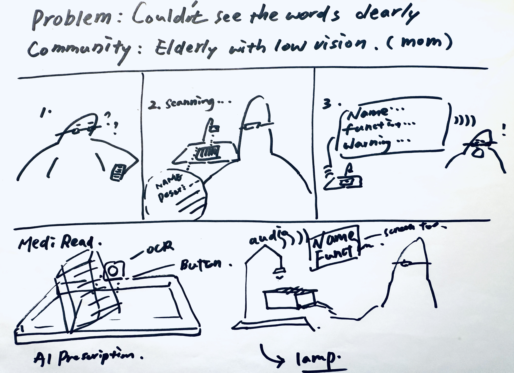
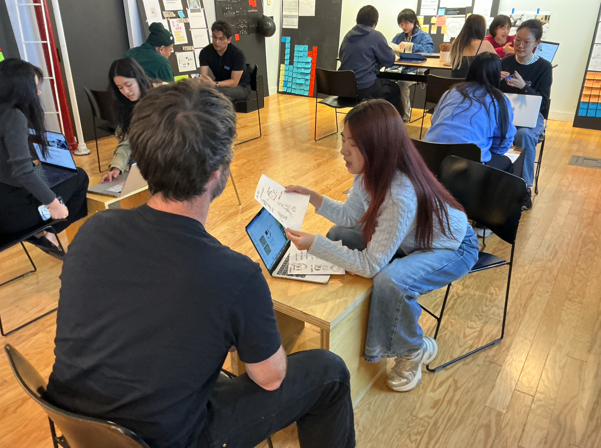
Concept sketch — early lamp form ideation
User testing — gathering feedback on the concept
Three barriers also affecting users: memory, cognition, and hearing
Research revealed that vision was only part of the problem. Three additional barriers shaped how the design needed to respond.
Elderly users often struggle to remember where they placed their medication, or whether they had already taken it that day. Products need strong visual presence and a fixed spatial position to reduce dependence on memory.
Complicated devices frequently lead to cognitive overload. Elderly users tend to give up rather than report problems. Any solution must work within existing habits and not ask users to learn something new.
Many elderly users experience varying degrees of hearing loss, which reduces the reliability of audio-based feedback. Any design that depends primarily on sound needs a louder voice.
Anything unfamiliar gets abandoned. The design challenge was making sure the device never felt foreign in the first place.
Technical Test: Laptop Camera + Audio Playback + Local OCR & TTS Model
I built the prototype using a laptop camera to simulate text recognition, paired with a local OCR and TTS model for audio playback. Technically, it worked.
But watching users interact with it revealed something the technology couldn't fix. They were uncertain when it would trigger. The voice felt unnatural. And when I looked closer, I realized the problem ran deeper than feedback — these were users who didn't use smartphone cameras either, not because they couldn't see the button, but because the interaction itself felt foreign.
The barrier wasn't vision. It was familiarity. A device that works technically but feels alien will simply get put down and never picked up again.
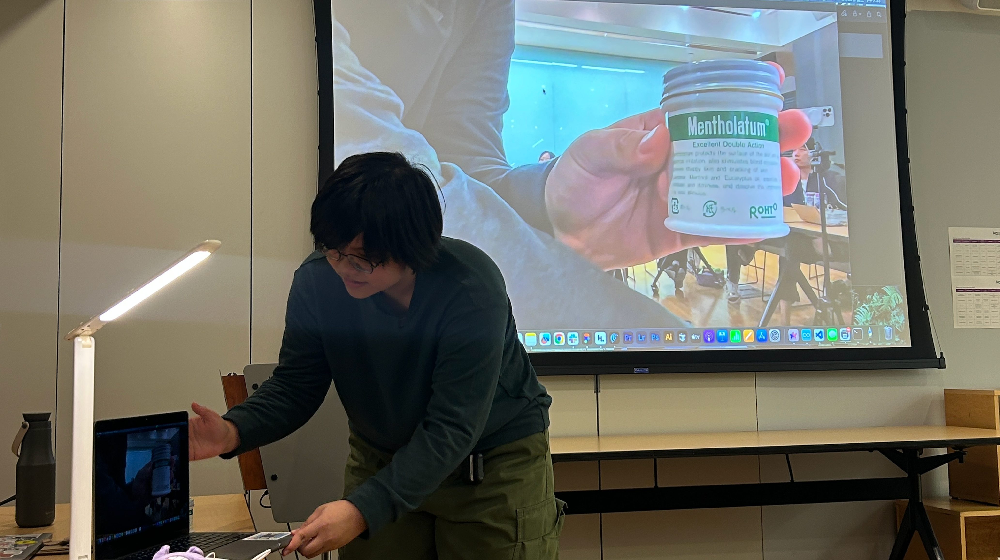
Prototype demo — testing the lamp's OCR reading on a medicine jar label
How might we create a more familiar reading experience for visually impaired elderly users?
The prototype exposed the real design question: not how to make the technology work, but how to make it feel like it was never there.
-
1
Voice Quality The original TTS output sounded mechanical and unfamiliar. Upgrading to a more natural-sounding engine wasn't just a quality improvement — it was about making the response feel like something a person might say, not something a machine produces.
-
2
Visual Feedback Users didn't know when the device had registered their action. Adding a visible cue to the button gave them a moment of confirmation, closing the loop without requiring them to understand what was happening underneath.
-
3
Object Familiarity A quiet speaker created doubt. Users weren't sure if the device had worked, or if they had simply missed it. A higher-volume unit removed that uncertainty — the response was now impossible to miss.
One unexpected finding surfaced during testing: English drug names created a comprehension barrier entirely separate from vision. This pointed to a layer of the problem that the device hadn't yet addressed.
From Sketch to Physical Product
Every iteration decision came together in the final physical prototype. The hardware centered on the Raspberry Pi Zero 2 W, paired with a camera module, high-volume speaker, and a physical button.
But the technical spec was never the point. The lamp form meant it already belonged on a reading table. The physical button meant there was only one thing to press. The high-volume speaker meant the response was always heard. None of it asked users to learn a new behavior — it just replaced the light they were already reaching for.
System Overview
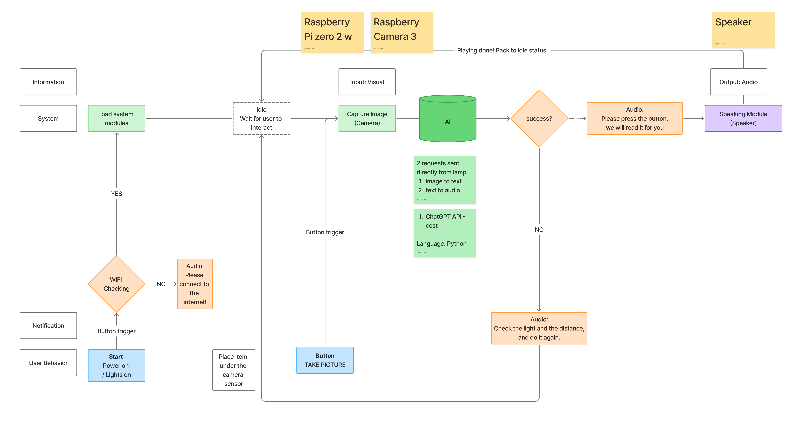
Build & Interface
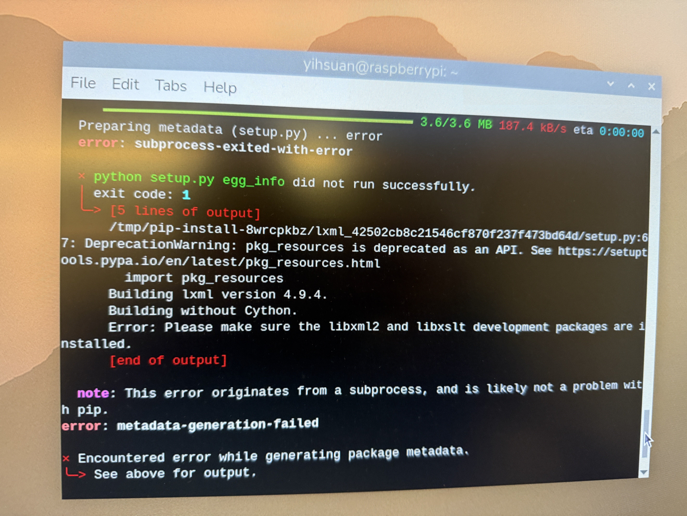
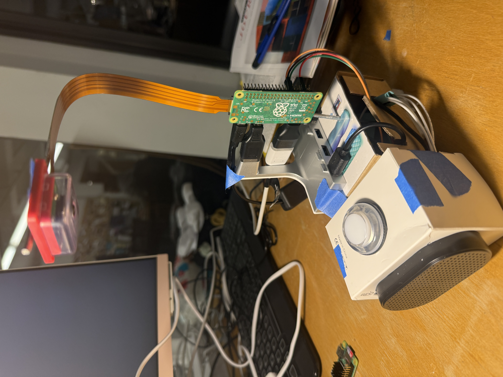
Demo
Reading a newspaper article aloud
Reading medicine label aloud
Presenting to a Live Audience
VoiceLamp was exhibited at SVA's Open Studio — putting the working prototype in front of a broader audience for real-time demos and unfiltered feedback.
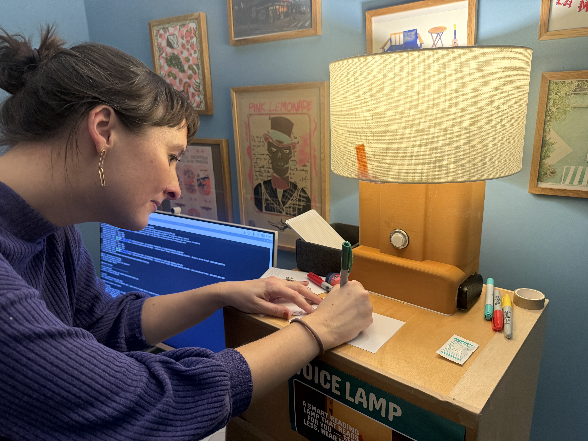
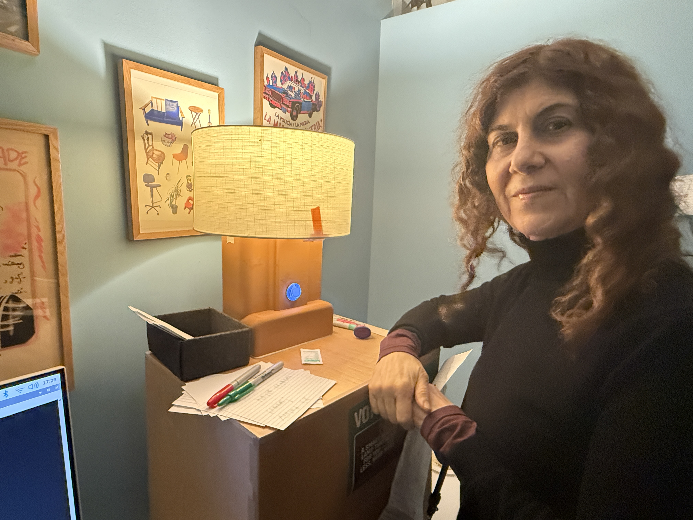
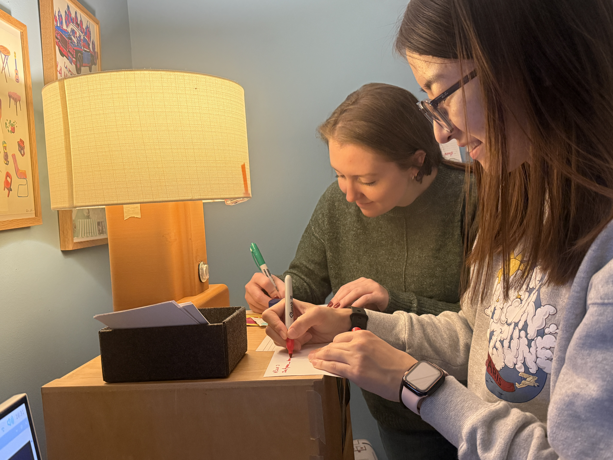
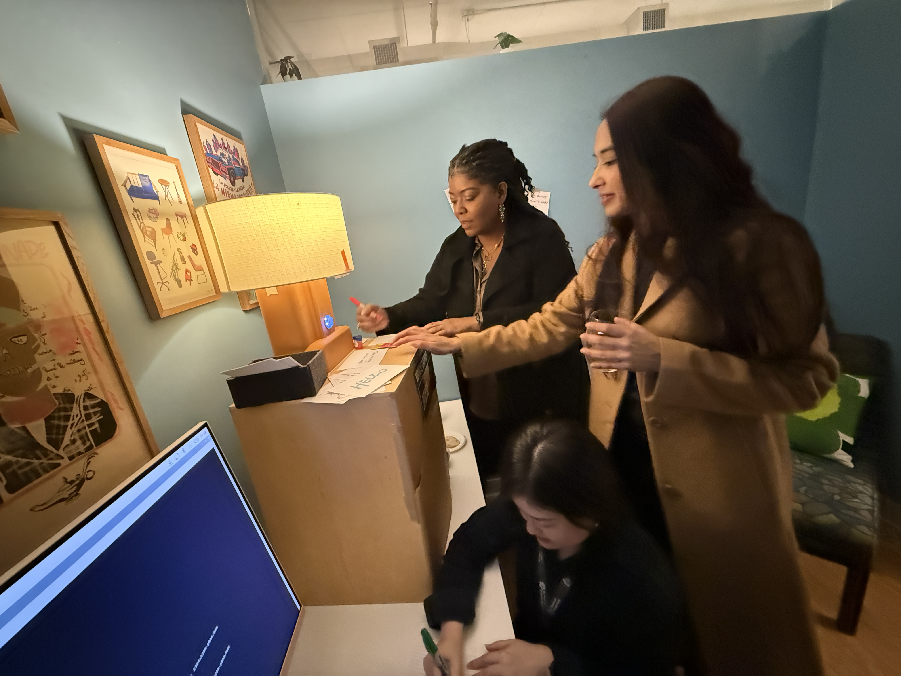
What two months of solo 0-to-1 taught me
-
1
Pragmatic Decision-Making in Hardware The project began with the ESP32, but real-world testing revealed its connectivity wasn't stable enough for reliable use. Switching to the Raspberry Pi wasn't a setback — it was the same logic that drove every other decision: find what actually works, not what looks good on paper.
-
2
Cross-Disciplinary Execution Completed by one person over two months, spanning user research, hardware selection, programming, 3D modeling, and manufacturing. The hardest part wasn't any single discipline — it was making sure every decision across all of them answered the same question.
-
3
Design Problems Expand During Execution The project began with vision. Testing revealed cognition, familiarity, and language comprehension as equally real barriers. The final product didn't just help users see — it tried to make sure they never felt like they were using something foreign.